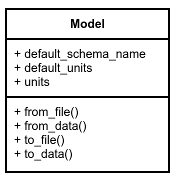
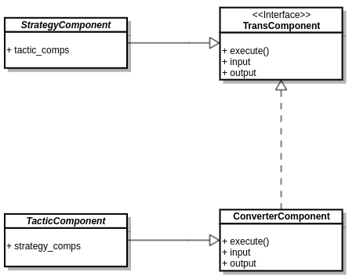

Design¶
MMElemental is strictly a python implementation of the MMSchema specification i.e. its main focus is on data classes, which are implemented in the form of pydantic models. MMElemental natively supports few common data formats such as JSON, YAML, and HDF5. In order to parse MM-specific file formats (sdf, mmCIF, PDB, etc.), MMElemental uses mmic_translator, which is a general-purpose component (part of the MMIC project) that enables converting between different data/file representations and MMSchema. Both model and components MMElemental provides/supports are explained in the next subsections.
Models¶
All models in MMElemental are immutable data-centric classes, which provide serialization and data validation methods based on the pydantic library.
{kind=link}
Each model has a set of fields that, when suitable, are used to automatically generate a unique hash that enables each object to be uniquely identified and check for file integrity. Furthermore, any model that stores physical quantities in its fields provides the associated units field as well (unless it’s dimensionless).
A UML diagram that summarizes some of the properties and methods found in a core MMElemental model is shown below. All Model implementations are subclasses of ProtoModel from the CMSElemental package, which serves as the backbone of MMElemental.
{kind=link}
The constructor/writer methods are available in models that support reading/writing common file formats or converting to other data objects. The default_units is a class property that returns whatever default physical units a particular model stores, while the instance property units returns the physical units assigned to the object after instantiation.
Components¶
There are 2 distinct classes of MM components we distinguish in MMElemental: strategy and tactic. The former defines general i/o schemas for a specific domain while the latter is a realization of the former. See MMIC for a more in-depth description.
{kind=link}
Translation¶
For the purpose of converting between different data/file representations or translating between different specifications, mmic_translator can hook up to specific tactic components.
{kind=link}
By default, MMElemental selects an appropriate tactic converter based on the run-time selection used in mmic_translator.
>>> mol = mmelemental.models.Molecule.from_file(grofile)
All debug information is stored in the extras field in mmschema_molecule. However, to access additional info on which tactic translator was used, we need to pass debug=True:
>>> mol = mmelemental.models.Molecule.from_file(grofile, debug=True)
>>> mol.extras["mmic_translator"]
{
"routine": "mmelemental.models.struct.molecule.Molecule.from_file",
"translator": ("mmic_mda", "0+untagged.149.gaadacf3"),
"engine": ("MDAnalysis", "2.0.0"),
"model": <class 'mmic_mda.models.mol.MdaMol'>,
}
In this case, MMElemental chose mmic_mda (based on MDAnalysis) to parse the grofile. In order to instruct mmelemental to use a different tactic translator, we need to manually specify which tactic translator to use i.e.
>>> mol = mmelemental.models.Molecule.from_file(grofile, translator="mmic_parmed", debug=True)
>>> mol.extras["mmic_translator"]
{
"routine": "mmelemental.models.struct.molecule.Molecule.from_file",
"translator": ("mmic_parmed", "0+untagged.235.gf48a39d"),
"engine": ("parmed", "3.4.0+16.gcac50320"),
"model": <class 'mmic_parmed.models.mol.ParmedMol'>,
}
In this case, we forced MMElemental to use mmic_parmed instead. If the requested tactic component is unavailable or unspported, MMElemental will pass whatever exception mmic_translator raises instead.
Validation¶
Not yet available.